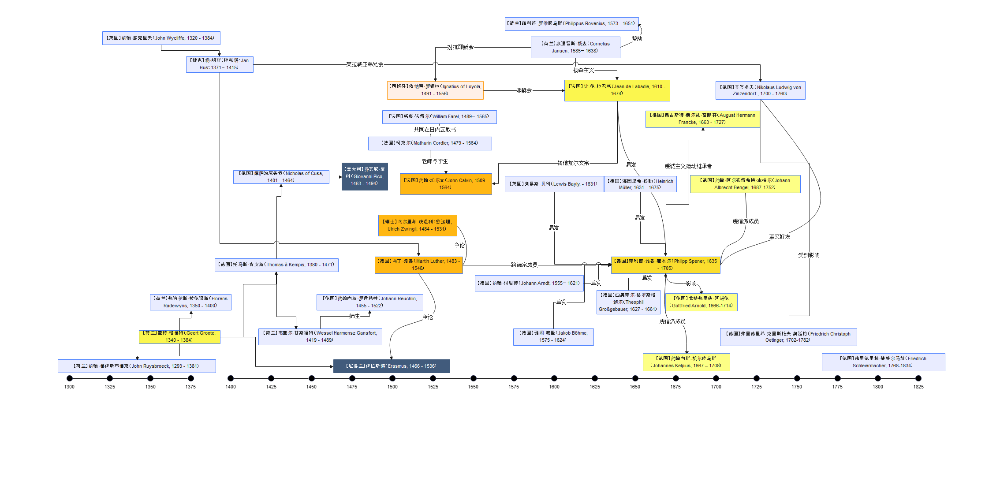

My Research
Journals
All Page
Graph
虔信派研究
研究资料
现代虔信派
https://baike.baidu.com/item/%E7%8E%B0%E4%BB%A3%E8%99%94%E4%BF%A1%E6%B4%BE/23150572?fr=aladdin
Discontent with the Roman Catholic Church
https://courses.lumenlearning.com/atd-herkimer-westerncivilization/chapter/discontent-with-the-roman-catholic-church
虔信派的简史
https://zhidao.baidu.com/question/330306661960280805.html
虔信派和佛兰克
https://xuewen.cnki.net/R2017050020000498.html
虔信派
https://baike.baidu.com/item/%E8%99%94%E4%BF%A1%E6%B4%BE/4585657?fr=aladdin
人物
【荷兰】
约翰·鲁伊斯布鲁克
（John Ruysbroeck, 1293 - 1381）
【英国】
约翰·威克里夫
（John Wycliffe, 1320 - 1384）
【荷兰】
盖特·格鲁特
（Geert Groote, 1340 - 1384）
【荷兰】
弗洛伦斯·拉德温斯
（Florens Radewyns, 1350 - 1400）
【捷克】
扬·胡斯
（捷克语：Jan Hus；1371－1415）
【德国】
托马斯·肯皮斯
（Thomas à Kempis, 1380 - 1471）
【德国】
库萨的尼各老
（Nicholas of Cusa, 1401 - 1464）
【荷兰】
韦塞尔·甘斯福特
（Wessel Harmensz Gansfort, 1419 - 1489）
【德国】
约翰内斯·罗伊希林
（Johann Reuchlin, 1455 - 1522）
【意大利】
乔瓦尼·皮科
（Giovanni Pico della Mirandola, 1463 - 1494）
【尼德兰】
伊拉斯谟
（Erasmus, 1466 - 1536）
【法国】
柯第尔
（Mathurin Cordier, 1479 - 1564）
【德国】
马丁·路德
（Martin Luther, 1483 - 1546）
【瑞士】
乌尔里希·茨温利
（慈运理, Ulrich Zwingli, 1484 - 1531）
【法国】
威廉·法雷尔
（William Farel, 1489－1565）
【西班牙】
依纳爵·罗耀拉
（Ignatius of Loyola, 1491 - 1556）
【法国】
约翰·加尔文
（John Calvin, 1509 - 1564）
【德国】
约翰·阿恩特
（Johann Arndt, 1555－1621）
【英国】
刘易斯·贝利
（Lewis Bayly, - 1631）
【荷兰】
菲利普-罗维尼乌斯
（Philippus Rovenius, 1573 - 1651）
【德国】
雅阁·波墨
（Jakob Böhme, 1575 - 1624）
【荷兰】
康涅留斯·杨森
（Cornelius Jansen, 1585－1638）
【法国】
让-德-拉巴底
（Jean de Labadie, 1610 - 1674）
【德国】
西奥菲尔·格罗斯格鲍尔
（Theophil Großgebauer, 1627 - 1661）
【德国】
海因里希-穆勒
（Heinrich Müller, 1631 - 1675）
【德国】
菲利普·雅各·施本尔
（Philipp Spener, 1635 - 1705）
【德国】
奥古斯特·赫尔曼·富朗开
（August Hermann Francke, 1663 - 1727）
【德国】
戈特弗里德·阿诺德
（Gottfried Arnold, 1666-1714）
【德国】
约翰内斯-凯尔皮乌斯
（Johannes Kelpius, 1667 – 1708）
【德国】
约翰·阿尔布雷希特·本格尔
（Johann Albrecht Bengel, 1687-1752）
【德国】
尼古劳斯·路德维希·青岑多夫
（Nikolaus Ludwig von Zinzendorf und Pottendorf, 1700 - 1760）
【德国】
弗里德里希·克里斯托夫·奥廷格
（Friedrich Christoph Oetinger, 1702-1782）
【德国】
弗里德里希·施莱尔马赫
（Friedrich Schleiermacher, 1768-1834）
组织
奥斯定会
（Augustinians）
罗拉德派
（Lollardy）
共同生活弟兄会
（Brethren of the Common Life, 14世纪末至16世纪）
耶稣会
（Society of Jesus）
摩拉维亚弟兄会
（Moravian Church）
拉巴底派
（Labadists, 1669）
著作
《
圣奥古斯丁的规则
》（Rule of Saint Augustine, 400）
《
师主篇
》（The Imitation of Christ, 拉丁语：De Imitatione Christi, 1418-1427）
《
有知识的无知
》（De Docta Ignorantia, 拉丁语：On learned ignorance/on scientific ignorance，1440）
《
论人的尊严
》（Oration on the Dignity of Man, 1486）
《
法拉戈神学研究
》（Farrago Rerum Theologicarum, 又名 Sum of Christianity, 1521）
《
基督教要义
》（Institutes of the Christian Religion, 1536）
《
真正的基督教
》（Wahres Christentum, 1605 - 1610）
《
虔诚的实践
》（The Practice of Piety, 第三版 1613）
《
通过牧师制度改革教会
》（The Reform of the Church Through the Pastorate, 1667）
《
荒凉锡安的守望者之声
》（Wächterstimme aus dem verwüsteten Zion）
《
敬虔愿望
》（Pia desideria）
思潮
基督教神秘主义
（Christian mysticism）
杨森主义
（Jansenism）
加尔文主义
（Calvinism）
虔诚主义
（Pietism）
激进的虔诚主义
（Radical Pietism）
运动
现代奉献运动
（Devotio Moderna）
扬·胡斯
运动
宗教改革
运动
人物关系图
id:: 6282edee-9bc6-42db-881b-93a67c72d4ae

References
研究计划
韦伯研究